◆「New Year 2022Pick Up召喚」期間◆
期間:2021年12月31日(五) 23:00～2022年1月10日(一) 11:59
為了記念迎接2022年，新登場的期間限定從者「★5(SSR)闇之高揚斯卡婭」與3種期間限定概念禮裝Pick Up！
並且本次6位期間限定★5(SSR)從者與期間限定概念禮裝Pick Up的6種召喚以每日交替舉辦！ ※「★5(SSR)闇之高揚斯卡婭」的Pick Up召喚及每日交替舉辦的Pick Up召喚，為各自分開的的召喚。
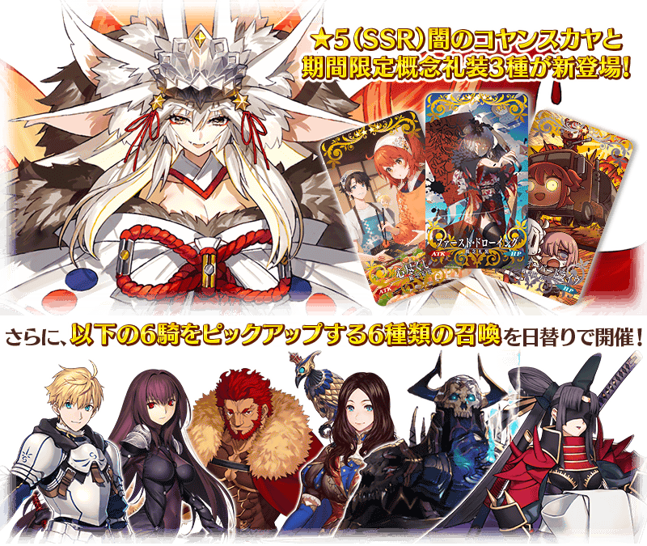
Pick Up期間中，Pick Up對象從者與概念禮裝的出現機率提升！
詳情請在聖晶石召喚畫面左下的召喚詳細確認。
11次召喚中確定1張★4(SR)以上和確定1位★3(R)以上的從者！ ※確定★4(SR)以上包含從者和概念禮裝。 ※本頁面皆為開發中圖片。會有與實際圖片相異的情況。
◆New Year 2022Pick Up召喚的注意◆
至今為止每日交替召喚就算變更召喚內容也當做連續的1個召喚，從本次會變更成每個召喚內容做為個別召喚舉辦的設定。
據此變更，每10次召喚進行的「＋1次獎勵召喚」與用有償聖晶石進行的1天1次限定「1次召喚」會變成每個召喚內容分別計算。
請注意在變更召喚內容的每天23:00時間點，「＋1次獎勵召喚」和「1次召喚」的計算會被重置。
※透過有償聖晶石1個「1次召喚」的計算，也會在每天3:00重置。
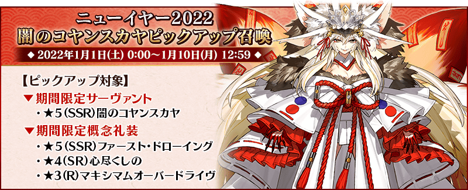

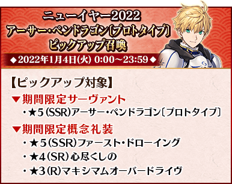
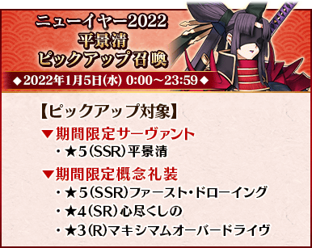
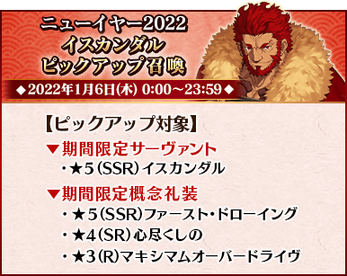
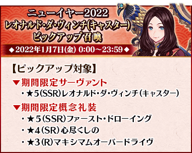
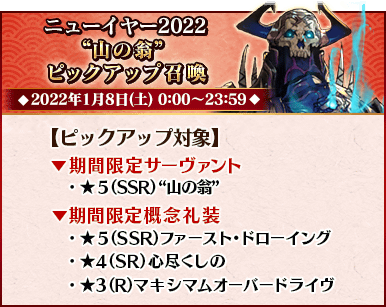
※請注意在各召喚中獎勵召喚的計算，會各自分別計算。 ※請注意各個Pick Up召喚的舉辦期間不同。 ※每日交替舉辦的Pick Up召喚中，只限當天Pick Up的從者才是透過「確定召喚」召喚的對象。「確定召喚」的詳情在此
◆關於1天1次限定的有償聖晶石召喚◆
※可以1天1次限定於期間限定召喚用有償聖晶石1個進行「1回召喚」。
※透過有償聖晶石1個的「1次召喚」，每天3:00重置。
※透過有償聖晶石1個的「1次召喚」對應的聖晶石召喚有好幾個的情況，各個召喚中1天各進行1次有償聖晶石1個的「1次召喚」。
※請注意就算進行透過有償聖晶石1個的「1次召喚」，不包含在1次獎勵的計算。
※聖晶石購入時賦予的「附贈(オマケ)」是做為無償聖晶石而不包含在有償聖晶石的個數，請注意別搞錯。另外，持有聖晶石的細項，可從持有道具一覧確認。
◆關於透過召喚獲得從者硬幣
在期間限定召喚、故事召喚、友情點數召喚中入手從者時，可獲得該從者的從者硬幣。
◆有關從者的注意◆
※請注意下述的期間限定從者只會從成為Pick Up對象的召喚抽出。
・★5(SSR)闇之高揚斯卡婭
・★5(SSR)亞瑟・潘德拉剛〔Prototype〕
・★5(SSR)斯卡哈(Lancer)
・★5(SSR)伊斯坎達爾
・★5(SSR)李奧納多・達文西(Caster)
・★5(SSR)“山之翁”
・★5(SSR)平景清
※下述的從者在Pick Up期間結束後不會追加到故事召喚。
・★5(SSR)闇之高揚斯卡婭
・★5(SSR)亞瑟・潘德拉剛〔Prototype〕
・★5(SSR)斯卡哈(Lancer)
・★5(SSR)伊斯坎達爾
・★5(SSR)李奧納多・達文西(Caster)
・★5(SSR)“山之翁”
・★5(SSR)平景清
◆有關概念禮裝的注意◆
※下述的概念禮裝，Pick Up期間中也能靠友情點數召喚獲得。
・★3(R)マキシマムオーバードライヴ
※在自動變還設定登錄★3(R)概念禮裝的情況，下述的概念禮裝會變成自動變還的對象。
・★3(R)マキシマムオーバードライヴ
自舉辦中的期間限定「New Year 2022Pick Up召喚」，追加「確定召喚」功能做為永久的新功能！
在期間限定Pick Up召喚中進行329次召喚之間1次都沒召喚到Pick Up對象★5(SSR)從者的情況，只限1次在進行第330次的召喚時可召喚1位Pick Up對象★5(SSR)從者。
◆功能實裝時間◆
2021年12月31日(五) 23:00～
◆注意◆
※召喚次數的計算是各召喚分開進行。另外，以每日交替Pick Up召喚內容切換的情況，會分別計算各自的召喚次數。舉例，每天23:00時間點變更召喚內容的Pick Up召喚情況，請注意在召喚內容變更的時間點召喚次數的計算會被重置。 ※期間限定Pick Up召喚結束後，召喚次數不會繼承到別的召喚。 ※就算已經持有該召喚Pick Up對象從者的情況，確定召喚的功能仍為有效。
關於使用期間限定Pick Up召喚中的「確定召喚」功能
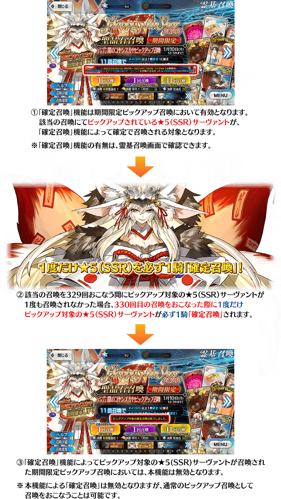
【重要】
◆關於「確定召喚」功能◆
・期間限定Pick Up召喚中，在329次以內未召喚到Pick Up對象★5(SSR)從者情況，只限1次可在進行第330次的召喚時「確定召喚」必定1位Pick Up對象★5(SSR)從者。
・在同時間舉辦多個期間限定Pick Up召喚的情況，各召喚分別(每個召喚畫面頁面)計算召喚次數。另外，以每日交替Pick Up召喚的內容切換情況，各自分別計算召喚次數。舉例，每天23:00時間點變更召喚內容的Pick Up召喚情況，請注意在召喚內容變更的時間點會重置召喚次數的計算。
・請注意期間限定Pick Up召喚中滿足以下任何條件的話，在召喚畫面會顯示「Pick Up對象確定召喚已結束。(ピックアップ対象の確定召喚は終了しました。)」，該召喚中「確定召喚」功能變成無效。
・第329次前召喚到Pick Up對象★5(SSR)從者
・在第330次確定召喚到Pick Up對象★5(SSR)從者
・召喚次數在期間限定Pick Up召喚中用有償聖晶石、無償聖晶石、呼符進行召喚時都會計算。目前的召喚履歴可於該召喚畫面內確認。
※每10次召喚進行的「＋1次獎勵召喚」與用有償聖晶石進行的1天1次限定「1次召喚」也在計算的對象。
※每個召喚內容會分開計算「＋1次獎勵召喚」與1日1次限定的「1次召喚」。請注意在變更召喚內容那天的23:00，「＋1次獎勵召喚」和「1次召喚」的計算會被重置。
※透過有償聖晶石1個「1次召喚」的計算，也會在每天3:00重置。
・在進行11次召喚時滿足「確定召喚」功能條件的情況，在施行11次召喚中會確定召喚1位Pick Up對象★5(SSR)從者。屆時，11次召喚中保障的確定1張★4(SR)以上與確定1位★3(R)以上的從者會另外生效。
・期間限定Pick Up召喚結束後，無法繼承召喚次數到別的召喚。
・故事召喚、友情點數召喚為「確定召喚」功能的對象外。
靈基召喚中，新追加可確認在過去進行召喚結果的「召喚履歴」功能。
點擊在各召喚畫面左下的「召喚履歴」後會顯示對話框，可確認該召喚履歴。
期間限定召喚、故事召喚、友情點數召喚等的召喚皆為對象。
※召喚履歴是每個召喚分別顯示對話框。 ※請注意期間限定舉辦的召喚結束情況，會變得無法確認該召喚履歴。 ※每個靈基召喚個別顯示的履歴的最多到500件。進行11次召喚超過限制的最大數情況，會顯示超過500件。
◆功能實裝時間◆
2021年12月31日(五) 23:00～

| 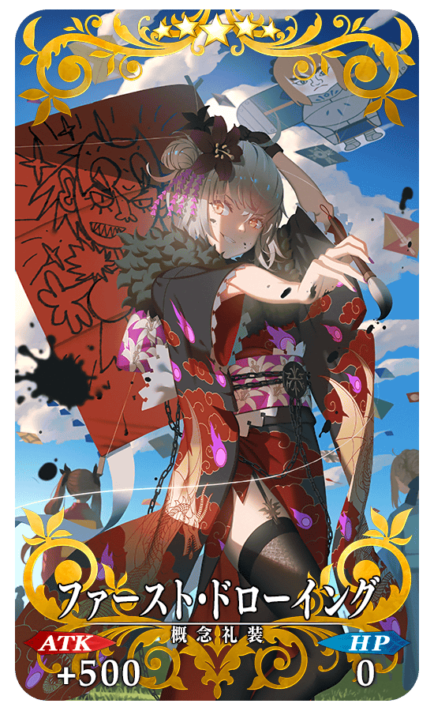 |
★★★★★SSR |
| 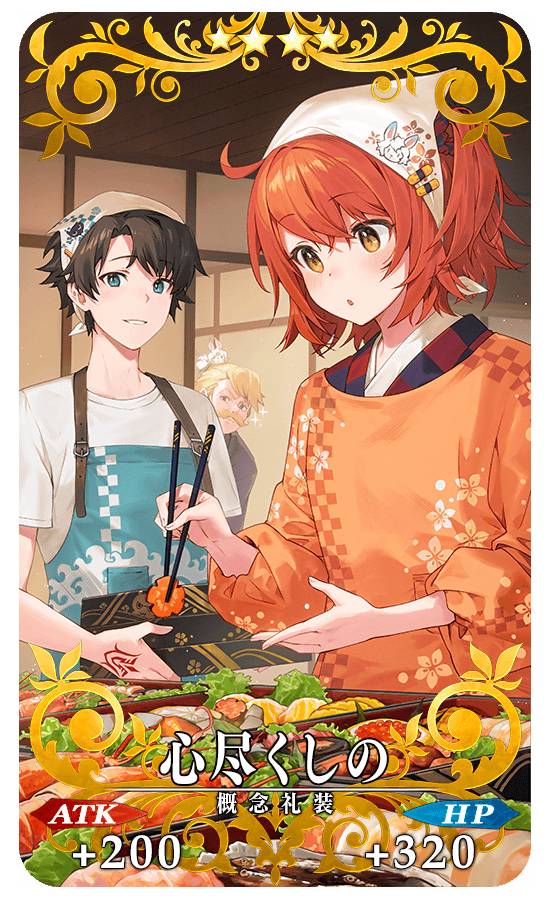 |
★★★★SR |

|
★★★R |
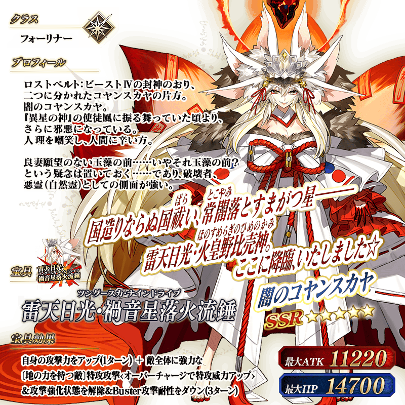 ※上述「★5(SSR)闇之高揚斯卡婭」的立繪為靈基再臨第3階段。
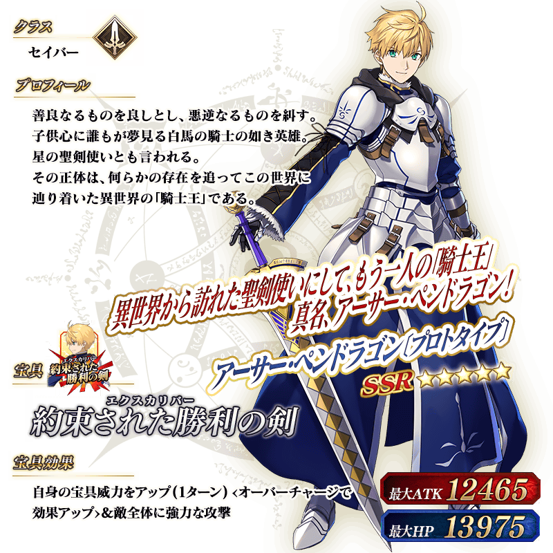 ※上述「★5(SSR)亞瑟・潘德拉剛〔Prototype〕」的立繪為靈基再臨第1階段。
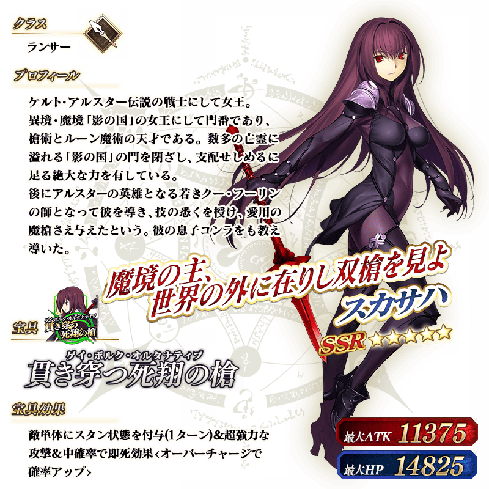 ※上述「★5(SSR)斯卡哈(Lancer)」的立繪為靈基再臨第1階段。
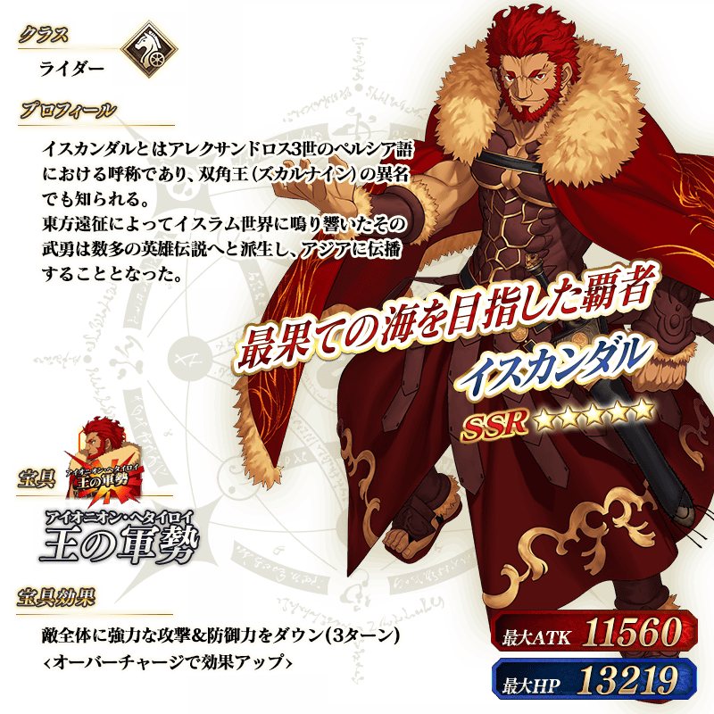 ※上述「★5(SSR)伊斯坎達爾」的立繪為靈基再臨第1階段。
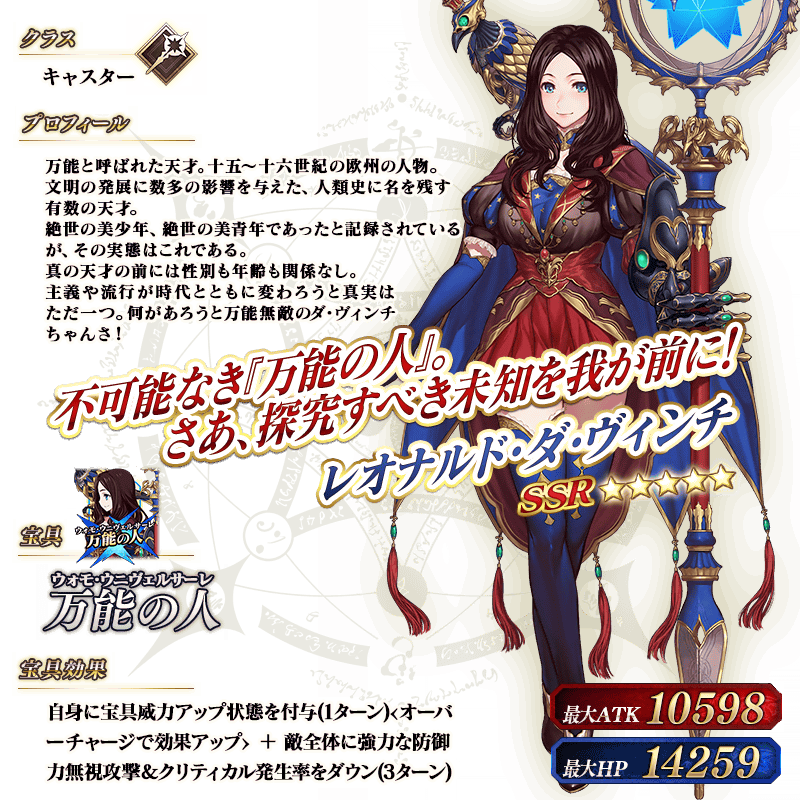 ※上述「★5(SSR)李奧納多・達文西(Caster)」的立繪為靈基再臨第1階段。
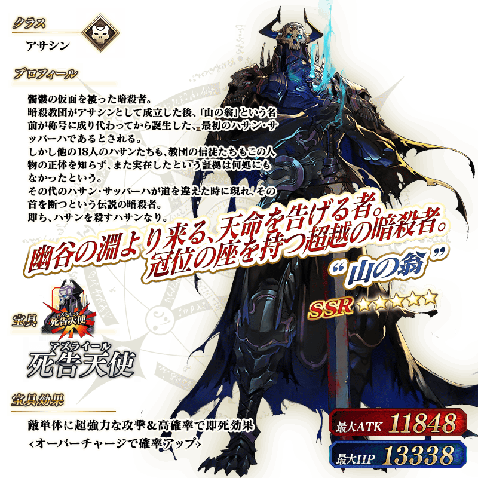 ※上述「★5(SSR)“山之翁”」的立繪為靈基再臨第1階段。
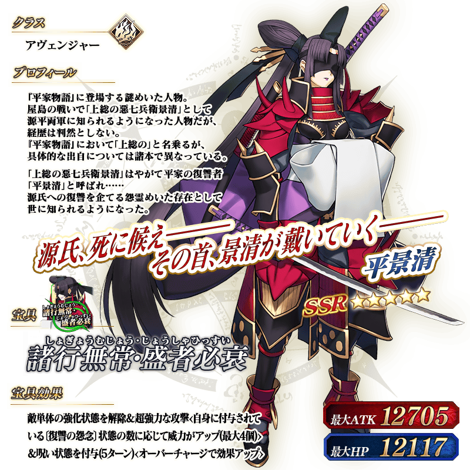 ※上述「★5(SSR)平景清」的立繪為靈基再臨第1階段。
介紹「★5(SSR)闇之高揚斯卡婭」的寶具演出！
「★5(SSR)闇之高揚斯卡婭」的寶具演出於一部份裝置有對應全螢幕顯示。
介紹在本召喚Pick Up的6位從者寶具演出！
「★5(SSR)亞瑟・潘德拉剛〔Prototype〕」、「★5(SSR)斯卡哈(Lancer)」、「★5(SSR)李奧納多・達文西(Caster)」、「★5(SSR)“山之翁”」、「★5(SSR)平景清」的寶具演出於一部份裝置有對應全螢幕顯示。
【★5(SSR)亞瑟・潘德拉剛〔Prototype〕】
【★5(SSR)斯卡哈(Lancer)】
【★5(SSR)伊斯坎達爾】
【★5(SSR)李奧納多・達文西(Caster)】
【★5(SSR)“山之翁”】
【★5(SSR)平景清】
在2020年舉辦的期間限定活動「影之國的舞鬥會 ～貓咪與兔子與聖杯戰爭～」中登場的「★5(SSR)斯卡哈(Lancer)」的靈衣「刺し穿つバニー」開放權在達文西工房的「靈衣縫製」追加！
用稀有稜鏡5個交換後，可入手上述靈衣開放權。
另外，想靈衣開放的話，除了靈衣開放權外再加上必須滿足一些開放條件。
◆追加時間◆
2022年1月2日(日) 23:00～
◆交換條件◆
滿足以下條件的御主才能交換
・通過「特異點F 炎上汙染都市 冬木」
・未入手靈衣「刺し穿つバニー」開放權
※追加到「靈衣縫製」的靈衣「刺し穿つバニー」開放權為永久，沒有交換期限。 ※關於已經獲得交換對象靈衣開放權的玩家，無法交換。
◆有關靈衣開放權的注意◆
※「★5(SSR)斯卡哈(Lancer)」的靈衣會隨著外觀變化一部份語音。
※請注意未持有「★5(SSR)斯卡哈(Lancer)」的情況，可入手靈衣開放權。但無法進行靈衣開放。
◆追加道具(永久)◆
| 追加道具 | 能交換次數 | 1次交換所需的 稀有稜鏡數 |
|---|---|---|
| 靈衣「刺し穿つバニー」開放權 | 1次 | 5個 |
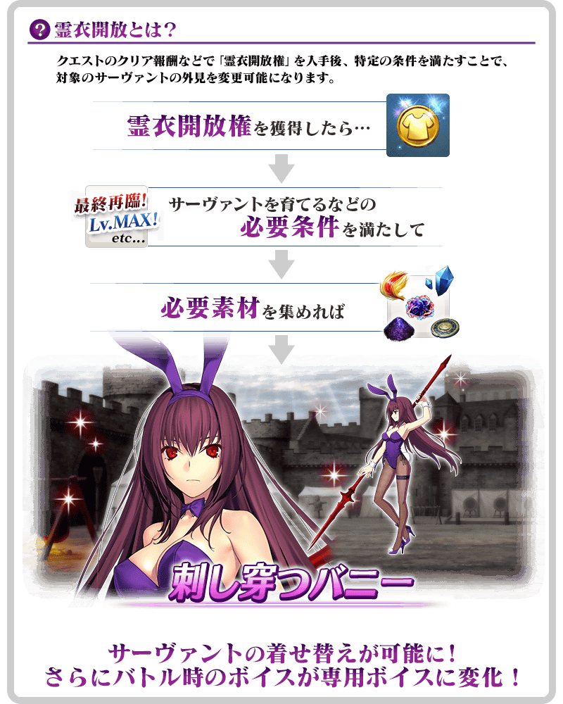

「靈衣開放」是自強化畫面進行。
※「靈衣開放」後會自動切換戰鬥角色和圖示。若想回到「靈衣開放」前的狀態和變成其他再臨階段的情況，可自從者詳細畫面變更。 ※進行「靈衣開放」不會讓職階和能力等有所變化。
介紹斯卡哈(Lancer)的靈衣開放後的寶具演出！
介紹開放靈衣「刺し穿つバニー」的「★5(SSR)斯卡哈(Lancer)」寶具演出！
「★5(SSR)斯卡哈(Lancer)」的寶具演出於一部份裝置有對應全螢幕顯示。
其他還有，
・2022年新年宣傳活動
・福袋召喚2022(寶具類型別)
以期間限定舉辦中！
關於詳情，請自下述橫幅確認。
■「2022年新年宣傳活動」詳細情報

■「福袋召喚2022(寶具類型別)」詳細情報